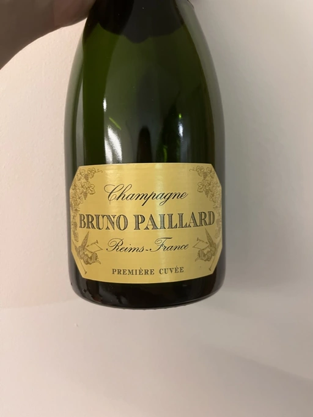
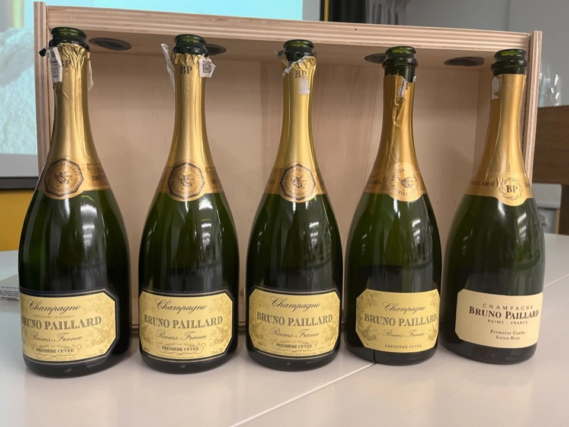

- Type
- White Sparkling, Extra brut
- Producer
- Bruno Paillard
- Vintage
- NV
- Disgorged in
- January 2018
- Spent on lees
- 36 months
- Location
- France, Champagne AOC
- Grapes
- Pinot Noir, Chardonnay, Pinot Meunier
- Alcohol
- 12
- Sugar
- NA
- Price
- 2250 UAH
- Cellar
- N/A
Ratings
2022-11-10 - 8.25
A ‘vertical’ tasting of Bruno Paillard Première Cuvée NV. This bottle was disgorged in January 2018. 36 months on lees. In comparison with the bottle disgorged in 2021, this one has more bready and oxidative notes. Apples are slightly baked, and citrus is replaced by chalk. Better balanced, acidity is tamed, and minerality is more highlighted.
